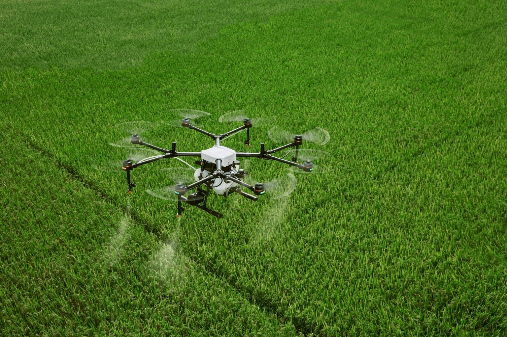

ROBÔS DE PLANTIO

Utilizados para semear de forma precisa, garantindo espaçamento uniforme e otimização do uso de sementes.
ROBÔS DE COLHEITA

Projetados para colher frutas e vegetais, muitas vezes utilizando visão computacional para identificar produtos maduros.
ROBÔS DE PULVERIZAÇÃO
Equipados com sensores para detectar a presença de pragas e doenças e aplicar pesticidas ou herbicidas de forma localizada.
ROBÔS DE MONITORAMENTO

Utilizam drones e veículos terrestres para coletar dados sobre as condições das plantas, solo e clima, ajudando na tomada de decisões agrícolas.
TECNOLOGIAS UTILIZADAS
• Visão Computacional: Permite que os robôs identifiquem plantas, pragas e frutos maduros usando câmeras e algoritmos de reconhecimento de imagem.
• Sensores de Proximidade: Utilizados para evitar colisões e garantir a navegação precisa em campos.
• Sistemas de GPS: Garantem a localização precisa dos robôs no campo, permitindo operações autônomas e mapeamento de áreas.
• Inteligência Artificial: Usada para análise de dados, tomada de decisões e aprendizado contínuo para melhorar a eficiência das operações agrícolas.
BENEFÍCIOS
• Aumento da Produtividade: Robôs podem trabalhar 24 horas por dia, aumentando significativamente a produção agrícola.
• Redução de Custos: Automatização de tarefas repetitivas reduz a necessidade de mão-de-obra humana, diminuindo os custos operacionais.
• Precisão e Eficiência: Capacidade de realizar tarefas com alta precisão, como plantio e pulverização, resultando em menor desperdício de insumos.
• Sustentabilidade: Uso eficiente de recursos e redução no uso de pesticidas e herbicidas, contribuindo para práticas agrícolas mais sustentáveis.
DESAFIOS NA IMPLEMENTAÇÃO DOS ROBÔS AGRÍCOLAS
• Custo Inicial Elevado: O investimento inicial em robôs agrícolas pode ser alto, especialmente para pequenos agricultores.
• Adaptação ao Terreno: Robôs precisam ser adaptáveis a diferentes tipos de terrenos e condições climáticas, o que pode exigir designs complexos.
• Integração com Sistemas Existentes: Necessidade de integrar robôs com sistemas de gerenciamento agrícola já existentes para otimizar operações.
• Manutenção e Suporte: Disponibilidade de suporte técnico e peças de reposição pode ser limitada em áreas rurais, complicando a manutenção dos robôs.